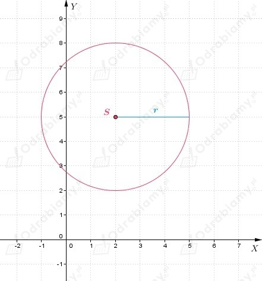
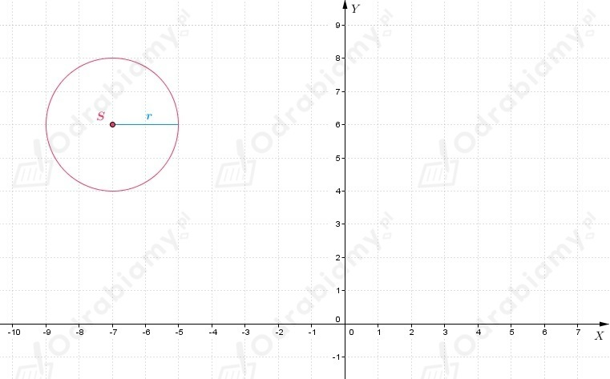
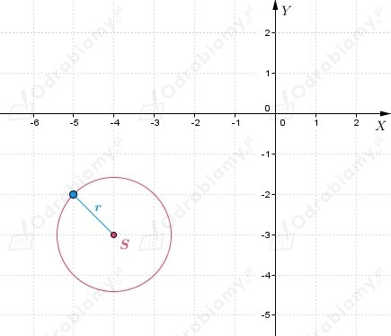
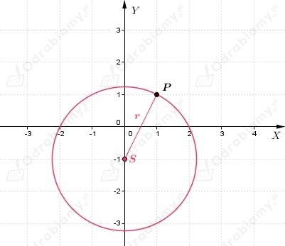
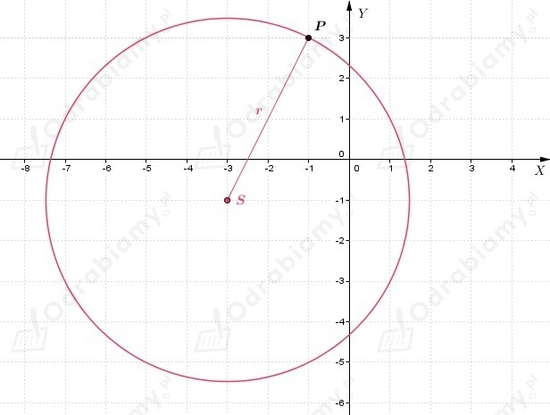
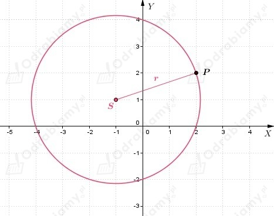

| Przypomnimy, że okrąg o środku w punkcie (a, b) i promieniu r>0 jest zbiorem wszystkich punktów płaszczyzny, których współrzędne (x, y) spełniają równanie
|
a)
Wiemy, że S(2, 5), a r=3, zatem możemy zapisać równanie okręgu
Narysujmy okrąg w układzie współrzędnych

b)
Wiemy, że S(-7, 6), a r=2, zatem możemy zapisać równanie okręgu
Narysujmy okrąg w układzie współrzędnych

c)
Wiemy, że S(-4, -3), a r=√2, zatem możemy zapisać równanie okręgu
Narysujmy okrąg w układzie współrzędnych

a)
Zatem możemy odczytać, że środek okręgu ma współrzędne S(2, 5), natomiast promień okręgu ma długość r=4.
b)
Zatem możemy odczytać, że środek okręgu ma współrzędne S(-1/2, 3/4), natomiast promień okręgu ma długość r=5/3.
c)
Zatem możemy odczytać, że środek okręgu ma współrzędne S(0, -9/4), natomiast promień okręgu ma długość r=√10.
d)
Zatem możemy odczytać, że środek okręgu ma współrzędne S(√2, √3), natomiast promień okręgu ma długość r=2√2.
e)
Zatem możemy odczytać, że środek okręgu ma współrzędne S(-5, -9), natomiast promień okręgu ma długość r=15.
f)
Zatem możemy odczytać, że środek okręgu ma współrzędne S(1 1/6, 0), natomiast promień okręgu ma długość r=3√5.
a)
Wiemy, że
gdzie S jest środkiem okręgu, a P punktem na okręgu.
Obliczamy promień okręgu
Zatem równanie okręgu ma postać
Okrąg w układzie współrzędnych

b)
Wiemy, że
gdzie S jest środkiem okręgu, a P punktem na okręgu.
Obliczamy promień okręgu
Zatem równanie okręgu ma postać
Okrąg w układzie współrzędnych

c)
Wiemy, że
gdzie S jest środkiem okręgu, a P punktem na okręgu.
Obliczamy promień okręgu
Zatem równanie okręgu ma postać
Okrąg w układzie współrzędnych
